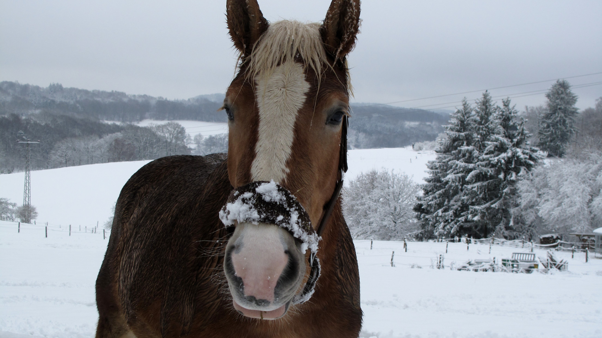

En bref : Gagner au Quinté+ ne repose pas sur la chance mais sur une méthodologie rigoureuse : analyse des partants, compréhension des conditions de course, gestion de bankroll et sélection structurée. Voici la méthode complète.
Le Quinté+ est le pari hippique le plus joué en France avec un jackpot qui dépasse régulièrement les 1 million d'euros. Pourtant, la majorité des joueurs perdent leur mise sans méthode. La différence entre un joueur amateur et un parieur gagnant ne tient pas au hasard : elle tient à la méthode d'analyse.
Sur Bravo Quinté, nous avons développé une approche rigoureuse qui a permis de sélectionner les bons chevaux jour après jour. Voici comment vous aussi pouvez construire votre propre méthode.
Le Quinté+ consiste à trouver les 5 premiers chevaux d'une course dans l'ordre exact ou dans le désordre. Il existe plusieurs types de Quinté selon la course :
Quinté Plat
Le plus fréquent
Quinté Trot
Attelé ou monté
Quinté Obstacle
Haies ou Steeple-chase
Gains typiques
800 à 3 000 €
Avant même de regarder les cotes, il faut comprendre ce que vous jouez. Un Quinté handicap n'a rien à voir avec un Quinté conditions. La méthode change radicalement.
C'est ici que 90% des joueurs échouent : ils regardent les cotes et le dernier classement. L'analyse sérieuse va bien plus loin.
| Critère | Ce qu'il faut vérifier | Poids indicatif |
|---|---|---|
| Forme récente | 5 dernières courses : positions, écart au 1er, régularité | 30% |
| Distance | Le cheval a-t-il déjà couru cette distance ? Résultat ? | 20% |
| Terrain | Bon, souple, lourd — le cheval est-il performant sur ce terrain ? | 15% |
| Poids | Avantage ou inconvénient dans le lot ? Impact dans les 500m finaux | 15% |
| Distance | Position au départ, numéro de corde, parcours dans le peloton | 10% |
| Jockey/Entraîneur | Statistiques sur la distance, le terrain, l'hippodrome | 10% |
L'erreur fatale : se fier uniquement aux cotes. Les cotes reflètent l'opinion du public, pas la réalité de la performance. Les meilleurs rapports se trouvent quand un cheval solide est sous-estimé par la cote.
Ne regardez pas juste la position finale. Regardez comment le cheval a couru :
La sélection est le cœur de la stratégie. Voici comment structurer vos 8 à 10 chevaux selon le budget.
Un cheval qui réunit au moins 4 des 6 critères ci-dessus. Il doit être régulier (jamais plus loin que 5ème sur ses 5 dernières courses), adapté à la distance et au terrain, avec un poids favorable.
Exemple : THE MUST — 2 victoires sur 3 courses, régulier sur obstacle, poids avantageux, jamais déçu à Auteuil. C'est une base solide.
Deux chevaux qui peuvent raisonnablement finir dans les 3 premiers. Ils doivent avoir un profil différent de la base (distance légèrement différente, style de course complémentaire) pour maximiser la couverture.
Des outsiders à bon rapport, pas des tocards. Un outsider à 15/1 avec 2 bonnes places récentes vaut mieux qu'un favori à 3/1 en baisse de forme. Ce sont eux qui font la différence entre un ticket perdant et un gros gain.
La règle d'or : Ne jamais miser plus de 3 à 5% de votre bankroll totale sur un seul ticket. C'est ce qui sépare les parieurs qui durent de ceux qui se lassent vite.
Même avec une bonne sélection, le Quinté+ est un pari de combinaison. La variance est réelle. La gestion de capital est ce qui transforme un jeu de hasard en activité potentiellement rentable.
| Budget | Bankroll recommandée | Mise max par ticket | Nombre de tickets/jour |
|---|---|---|---|
| Petit budget | 200 à 500 € | 10 à 25 € | 1 à 2 tickets |
| Budget moyen | 500 à 2 000 € | 25 à 100 € | 2 à 3 tickets |
| Budget élevé | 2 000 € et plus | 100 à 300 € | 3 à 4 tickets |
Voici les 5 erreurs les plus fréquentes observées chez les parieurs de Quinté+ :
Chaque jour sur Bravo Quinté, nous appliquons exactement cette méthodologie. Voici ce que vous trouverez dans chaque analyse :
À retenir : Il n'existe pas de formule magique pour gagner au Quinté+ à chaque course. Ce qui fonctionne sur la durée, c'est une méthodologie rigoureuse, une gestion disciplinée de votre bankroll, et la patience. Les gros gains ne viennent pas d'un coup : ils viennent de la régularité.
La rentabilité au Quinté+ ne se mesure pas en jours mais en mois. Les parieurs méthodiques observent généralement une tendance positive après 3 à 6 mois de pratique disciplinée. La clé est la constance dans la méthode, pas la fréquence des mises.
Non. Il est souvent plus judicieux de ne jouer que les courses où votre analyse est solide. Ne pas jouer est un choix stratégique, pas un manque de courage. Les jours de forte probabilité de gain méritent plus d'allocation que les jours douteux.
Il n'existe pas de combinaison universellement "meilleure". La meilleure combinaison est celle qui découle de votre analyse rigoureuse. Ce qui est constamment observé : une base solide (4+ critères sur 6) associée à des outsiders à bon rapport produit les meilleurs résultats à long terme.